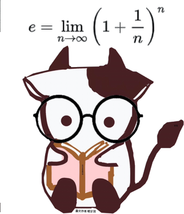

把整個高中數學攤開成一張圖：問什麼 → 出現什麼關鍵字 → 可以動用哪些工具 → 這些工具有什麼限制
面對陌生題目時，你需要的不是「想起某一題」，而是「知道自己有哪些武器」。
會在全部 — 項工具的「名稱／使用時機／限制／常見錯誤」中搜尋。點搜尋結果可看完整說明。
課本按章編排，考試從不按章出題。這 10 張圖依「題目在問什麼」把散在各冊的工具重新排隊，順著問題往下走就找得到該用的工具。
點領域或主題可展開該分支的細部心智圖（每個領域有自己一張圖）。圖太寬可左右捲動。
平常讀書時：每讀完一章，回到這張圖找到它的位置，問自己「它跟旁邊的主題有什麼關係？」—— 孤立記住的公式最容易忘，長在樹上的公式才叫理解。
寫題目卡住時：不要馬上翻解答。先問「這題屬於哪個領域？」→ 進入該分支圖 → 掃過那個主題的所有工具 → 逐一問「這個工具的觸發條件，題目有沒有給？」
訂正錯題時：錯的往往不是計算，而是「限制沒檢查」。到工具的限制／前提欄 找到你踩的那個坑，把它抄進錯題本。
考前複習時：把每個領域的分支圖印出來，遮住「工具」欄，只看「什麼時候用」，測試自己能不能反射性地說出工具名稱。